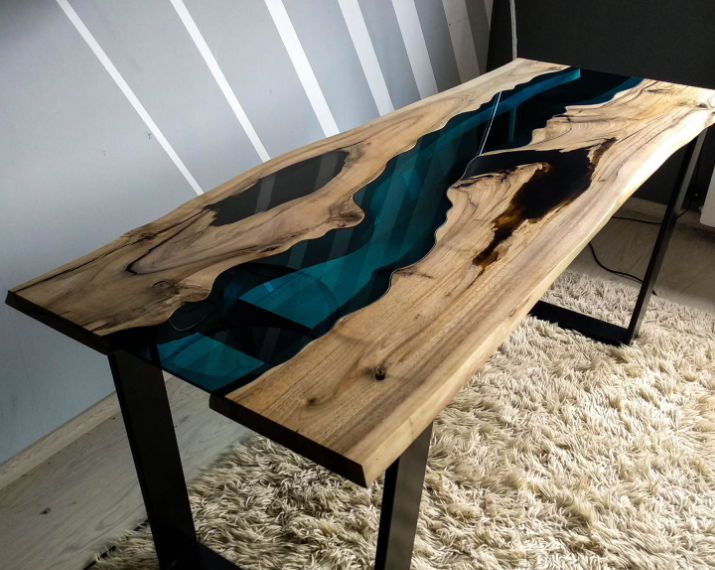

Primeros proyectos
Al principio, simplemente me propuse aprender su manipulación mas básica, haciendo pequeños objetos con moldes (como ceniceros y dados), para luego lijarlos y pulirlos. Gracias a esto aprendí las bases para poder hacer proyectos ambiciosos ( mesas y cubiertas ).
Algunos proyectos increíbles
A continuación les muestro algunos proyectos de algunos profesionales en internet, para que puedan imaginar lo que se puede hacer con un poco de imaginación y mucha práctica y conocimiento.
